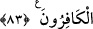

SANA DÜŞEN ANCAK TEBLİĞ
80. Allah, evlerinizi sizin için bir huzûr ve sükûn yeri yaptı ve sizin için davar
derilerinden gerek göç gününüzde, gerekse konaklama gününüzde, kolayca
taşıyacağınız evler; yünlerinden, yapağılarından ve kıllarından bir süreye kadar
(faydalanacağınız) bir ev eşyası ve bir ticaret malı meydana getirdi.
81. Allah, yarattıklarından sizin için gölgeler yaptı. Dağlarda da sizin için
barınaklar yarattı. Sizi sıcaktan koruyacak elbiseler ve savaşta sizi koruyacak
zırhlar yarattı. İşte böylece Allah, müslüman olmanız için üzerinize nîmetini
tamamlıyor.
82. (Ey Resûlüm!) Yine de yüz çevirirlerse, artık sana düşen ancak açık bir
tebliğden ibarettir.
83. Onlar Allah’ın nîmetini bilirler (itiraf ederler). Sonra da onu inkâr ederler.
Onların çoğu kâfirdir.
“Allah,” taştan ve topraktan yaptığınız “evlerinizi” ikâmet ettiğiniz vakit “sizin için
bir huzûr ve sükûn yeri yaptı”
el-Vâkıâtü’l-Mahmûdiyye’de der ki: “Sülûk’un şartı üçtür: Zaman, mekan ve ihvan.
Zaman ve mekanın mutlaka fetretten (gevşeklik veren bir aradan) uzak olması gerekir.
İhvan ise salikin ihtiyaçlarını karşılayarak, onun başka şeylerle meşguliyetini azaltır.
Sülûkün devamı ve kesintiye uğramaması için mutlaka bu zikredilen şartların bulunması
gerekir.” Gâyet açıktır ki, sülûk için önce mekan, sonra zaman, sonra ihvan, sonra da
havatırdan kurtulmak gerekir.
el-Esrâru’l-Muhammediyye’de der ki: Meskenden gâye yağmur ve soğuktan